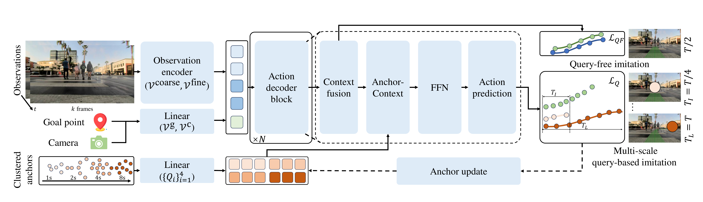
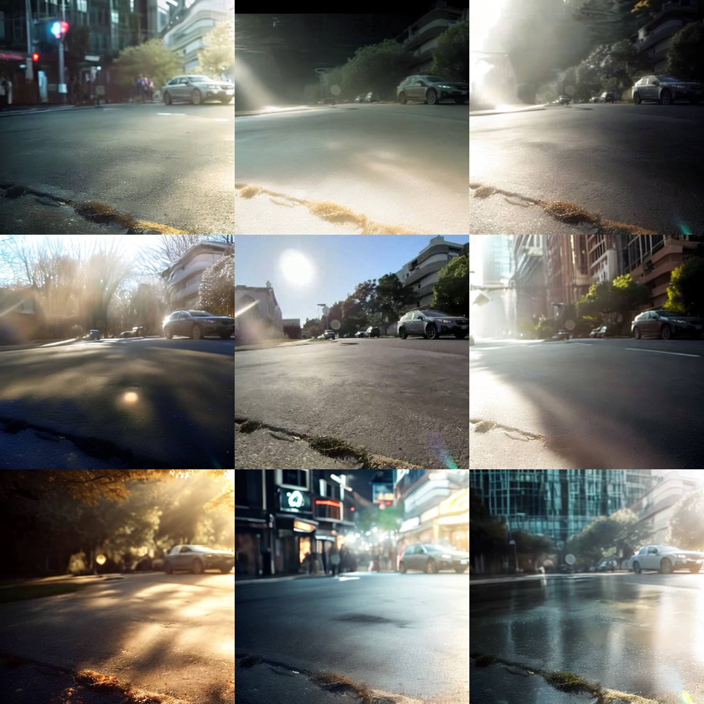
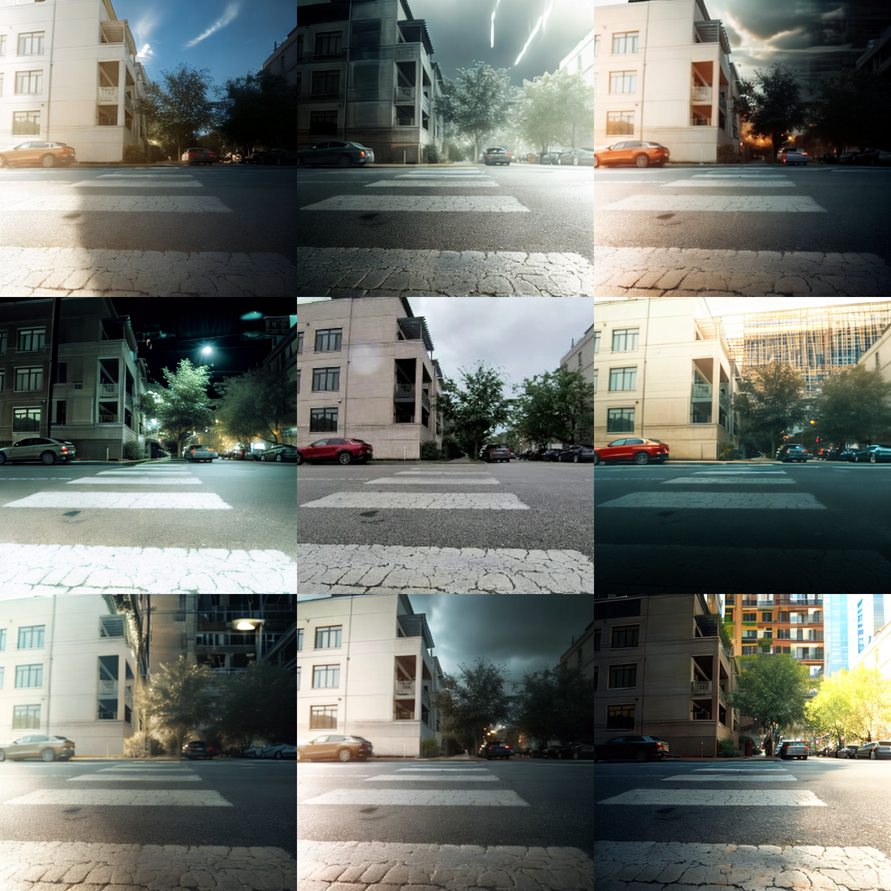
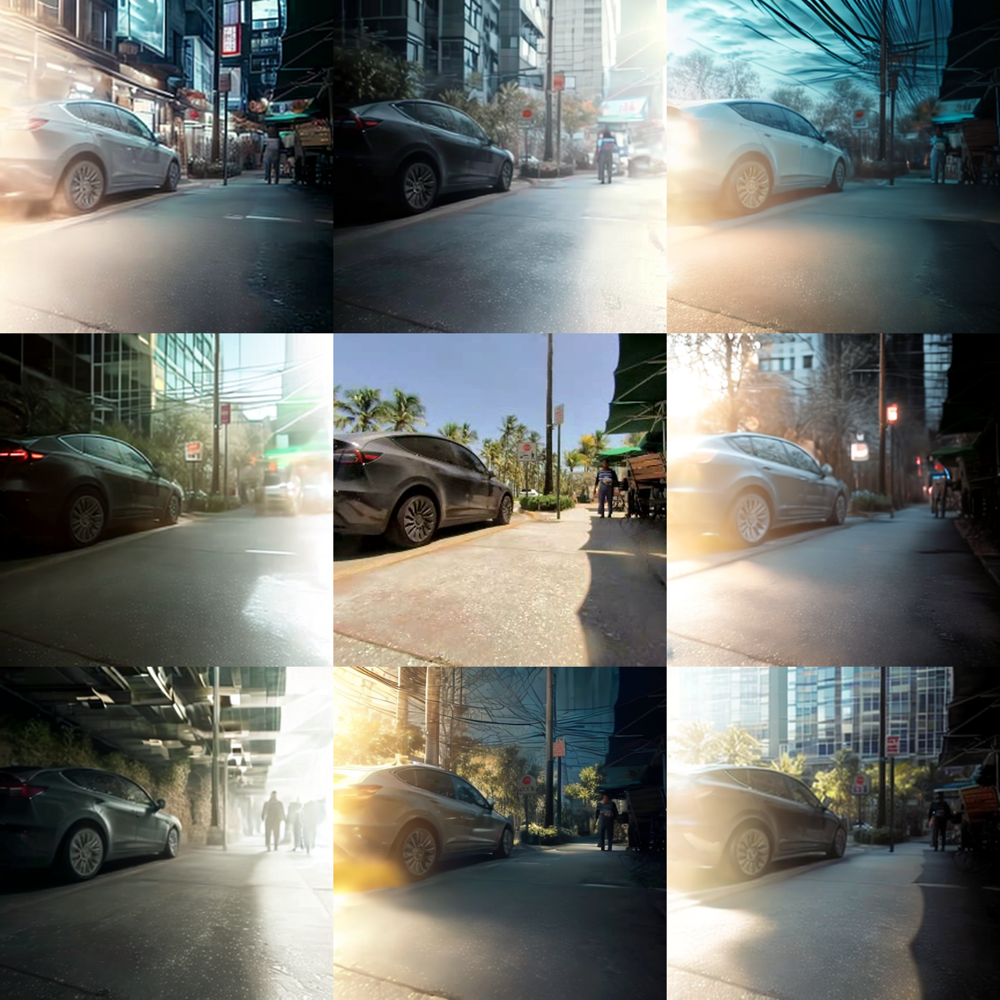

Learning Sidewalk Autopilot from Multi-Scale Imitation with Corrective Behavior Expansion
ICRA 2026
Honglin He 1 , Yukai Ma 1 , Brad Squicciarini 2 , Wayne Wu 1 , Bolei Zhou 1
1 University of California, Los Angeles , 2 Coco Robotics
TL;DR
- MIMIC (Multi-scale IMItation with Corrective expansions) is an imitation learning framework for training a sidewalk autopilot from teleoperation data. We focus on augmenting training data at both the behavior level and visual diversity through corrective behavior expansion and generative data augmentation.
1. We introduce a multi-scale imitation learning architecture with horizon-specific anchors that jointly captures short-horizon interactive behaviors and long-horizon goal-directed intentions.
2. We propose corrective behavior expansion that synthesizes deviation-recovery trajectories from existing teleoperation data, enabling the policy to learn to recover from its own mistakes.
3. We adopt generative data augmentation to enrich visual diversity while preserving scene geometry, improving robustness to varied lighting and weather conditions.
4. We demonstrate improvements in real-world closed-loop deployment on diverse sidewalk scenarios.
MIMIC Framework

MIMIC adopts an encoder-decoder architecture that processes RGB observations, and goal signals into a spatiotemporal representation. The action decoder leverages time-horizon-specific anchors to produce actions parameterized by GMMs across multiple horizons, enabling the model to learn both fine-grained reactivity and long-term planning in a unified framework.
Corrective Behavior Expansion
We synthesize failure-correction scenarios by deliberately generating trajectories in which the robot deviates from the intended route, and then provide corrective actions as supervision.
Based on TrajectoryCrafter, we perturb the trajectory using a deviation-recovery noise sequence, and re-render novel observations, pairing each perturbed trajectory with a corrective recovery maneuver.
Generative Data Augmentation



We adopt a fore-background relighting model to enrich visual diversity while preserving scene geometry.
Based on Light-A-Video, we disentangle foreground objects from the background, and apply prompt-based relighting with different strength coefficients to synthesize novel lighting conditions.
| Original | "icy road with strong reflections from frozen surface" | "commercial street at night with shop signs lit" |
| Original | "snowfall reducing visibility" | "dusk with half-lit sky" |
| Original | "rain streaks on glass facades reflecting light" | "sunny afternoon with strong shadows" |
| Original | "after rain with wet ground reflections" | "evening twilight with streetlights turning on" |
Real-World Deployment
We evaluate the learned autopilot policy on a wheeled delivery robot developed by Coco Robotics. It uses a front monocular RGB camera as its sole perception input for sidewalk navigation. The policy runs in real time, producing trajectory to generate steering and velocity commands from images and GPS without any HD maps or LiDAR.
Acknowledgement
We build our pipelines upon TrajectoryCrafter for novel-view trajectory synthesis and Light-A-Video for video relighting. We thank the authors for open-sourcing their work.
We thank Coco Robotics for providing the robot platform and teleoperation data used in this work.
Reference
@inproceedings{he2026learning,
title={Learning Sidewalk Autopilot from Multi-Scale Imitation with Corrective Behavior Expansion},
author={Honglin He and Yukai Ma and Brad Squicciarini and Wayne Wu and Bolei Zhou},
booktitle={2026 IEEE International Conference on Robotics and Automation (ICRA)},
year={2026},
organization={IEEE}
}